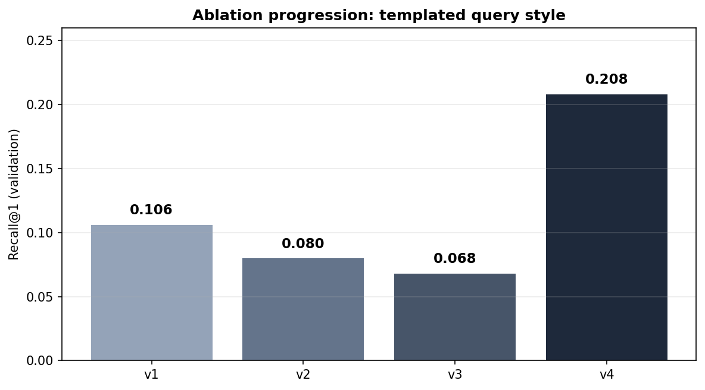
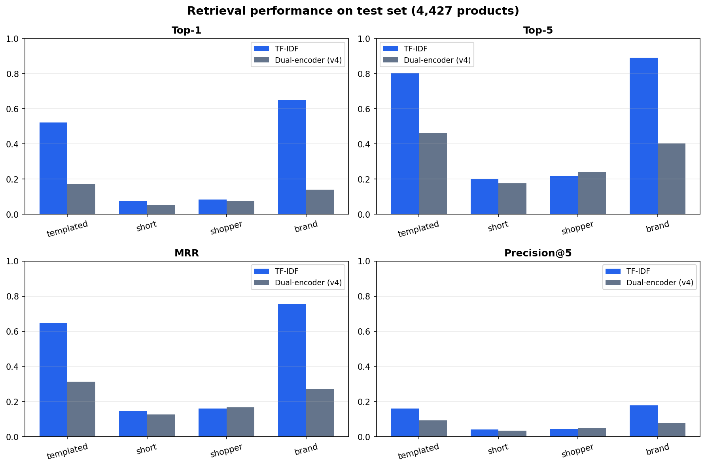
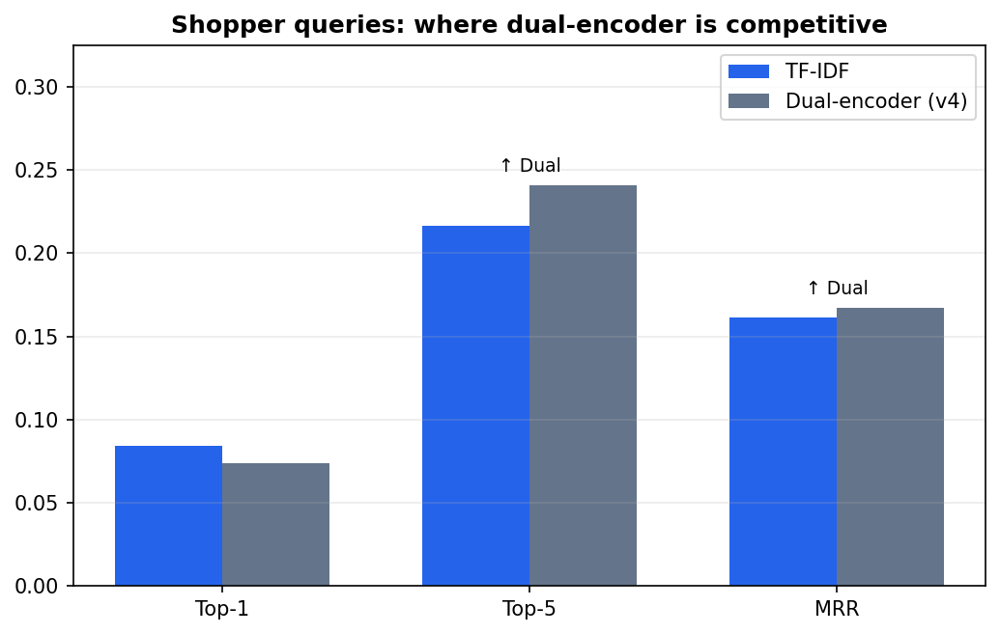
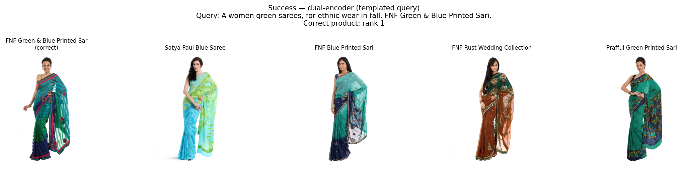
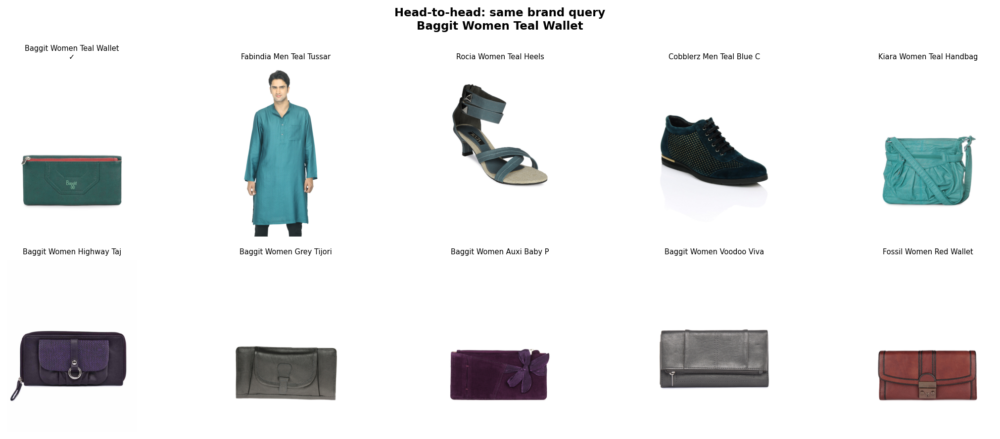
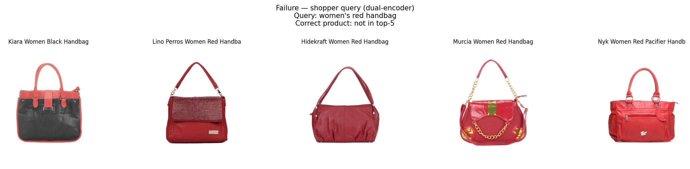

Richardson Chhin · Samii Shabuse · DSCI471 · May 2026
Can a dual-encoder deep learning model, trained on paired fashion images and text, outperform traditional keyword-based e-commerce search?
| Item | Detail |
|---|---|
| Source | Kaggle Fashion Product Images (~44k) |
| Splits | 80/10/10 train / val / test |
| Test gallery | 4,427 products |
Pipeline: src/prepare_data.py
| Style | Example |
|---|---|
| templated | A men navy blue shirts, for casual wear in fall... |
| shopper | men's navy blue shirt |
| brand | Turtle Check Men Navy Blue Shirt |
| short | navy shirt |
Text query → MiniLM (frozen) → 384-d embedding
↓ cosine similarity
Product image → EfficientNetB0 (fine-tuned) → 384-d embedding

Recall@1 on templated queries — v4 (MiniLM) nearly doubled v1

TF-IDF wins Top-1 on every query style
| Query type | TF-IDF | Dual-encoder |
|---|---|---|
| templated | 0.52 | 0.17 |
| shopper | 0.08 | 0.07 |
| brand | 0.65 | 0.14 |
| short | 0.07 | 0.05 |

Higher Top-5 (0.24 vs 0.22) and MRR (0.167 vs 0.161)



Conclusion: Keyword search wins Top-1 when the gallery is text-indexed. Dual-encoder is viable for cross-modal retrieval and wins on shopper Top-5 / MRR.
Future work: fine-tune text tower, hard negatives, CLIP-style pretraining, hybrid TF-IDF → dual reranking.
Full report: docs/reports/final_report.pdf · Repro: docs/GRADING.md
Thank you!